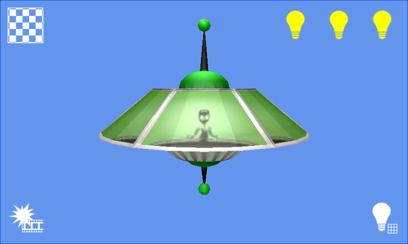

3D Graphics
Ported from Microsoft's XNA 4.0 Graphics 3D Sample.
Source for this sample on GitHub ↗

Play ▸Opens in a new tab.
About this sample
A model lit by three independent directional lights demonstrates per-vertex and per-pixel lighting. The controls also switch the starfield background and an explosion animation.
Controls
| Action | Mouse or touch |
|---|---|
| Toggle the three lights | Three buttons at the top right |
| Toggle the starfield | Button at the top left |
| Toggle per-pixel lighting | Button at the bottom right |
| Toggle the explosion animation | Button at the bottom left |
| Rotate the spaceship | Drag with one finger or the left mouse button |
| Zoom | Pinch with two fingers on a touch screen |